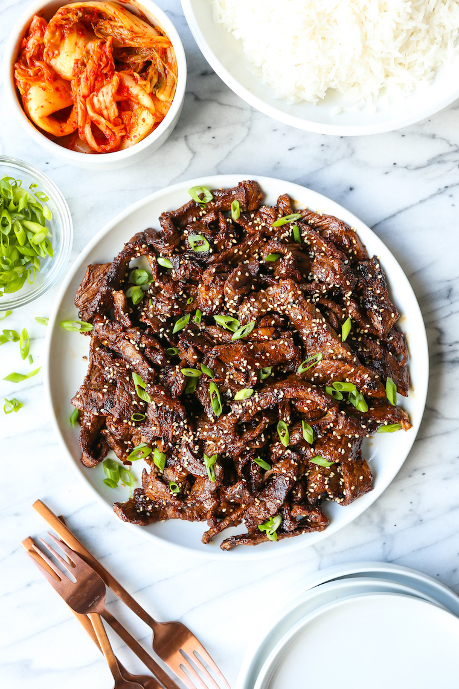

Bulgogi Recipe
Description
Bulgogi from Korean bul-gogi, literally "fire meat", is a gui (Korean-style grilled or roasted dish) made of thin, marinated slices of meat, most commonly beef.
It is grilled on a barbecue or on a stove-top griddle.
Ingredients
- Steak : This recipe calls for flank steak because it's tender and flavorful. You can also use skirt steak or hanger steak.
- Soy Sauce : Salty, umami-rich soy sauce is the base of this beef bulgogi marinade.
- Sugar : A couple tablespoons of white sugar lends sweetness, balancing the other savory flavors.
- Green Onion and Garlic : Chopped green onion and minced garlic add flavor to the marinade, without overpowering the other ingredients.
- Sesame Seeds : You can use toasted or un-toasted sesame seeds.
- Sesame Oil : Use good quality sesame oil for the best flavor.
- Pepper : Finish strong with a touch of black pepper. If you used low-sodium soy sauce, you can also add a pinch of salt here if you want.
Steps
- Marinate the Steak. Place the flank steak in a shallow bowl. In a separate bowl, combine the rest of the ingredients and whisk until blended. Pour the marinade over the steak — make sure the meat is completely covered. Cover the bowl and allow the beef to marinate in the fridge for about an hour.
- Grill the Steak. On a lightly oiled grill set to high heat, cook the beef until it's charred and completely cooked through. This should take about 1 or 2 minutes on each side.